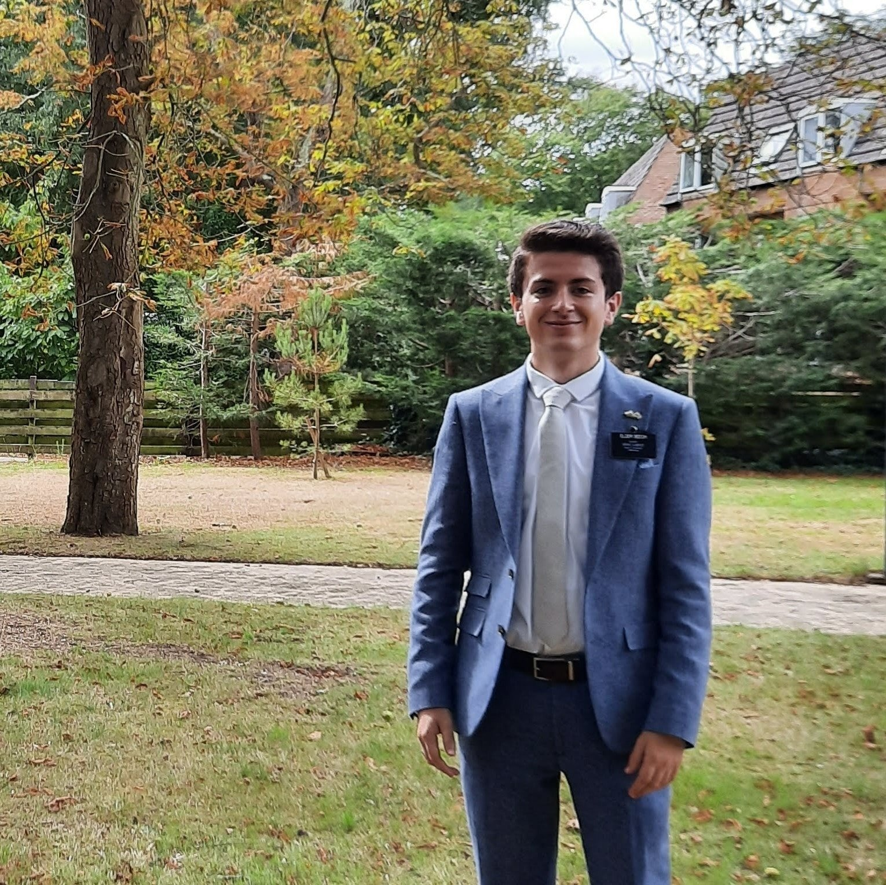

About Me
My name is Kenton and I live in South Africa. I am currently pursuing my BASc in Software Development. I come from a small family, with only one older brother. I love hiking, camping, and sports.

East London, South Africa
East London, South Africa, is a vibrant coastal city nestled along the Indian Ocean. Known for its stunning beaches, rich cultural heritage, and thriving economy, East London offers visitors a unique blend of urban sophistication and natural beauty. Explore its bustling markets, historical landmarks, and diverse culinary scene, or simply relax on its pristine shores. With a warm climate year-round and a welcoming atmosphere, East London is a destination that captivates all who visit.